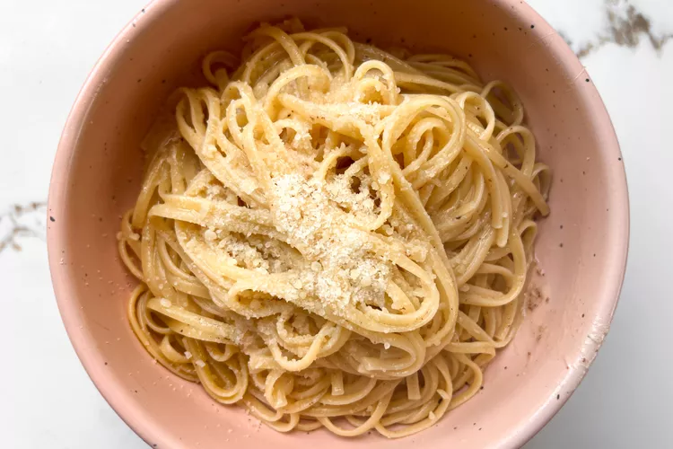

The Best Soft Chocolate Chip Cookies

- 8 tablespoons of salted butter
- 1/2 cup white sugar (I like to use raw cane sugar with a coarser texture)
- 1/4 cup packed light brown sugar
- 1 teaspoon vanilla
- 1 egg
- 1 1/2 cups all purpose flour (6.75 ounces)
- 1/2 teaspoon baking soda
- 1/4 teaspoon salt (but I always add a little extra)
- 3/4 cup chocolate chips (I use a combination of chocolate chips and chocolate chunks)
-
Preheat the oven to 350 degrees. Microwave the butter for about 40 seconds to just barely melt it.
It shouldn’t be hot – but it should be almost entirely in liquid form.
-
Using a stand mixer or electric beaters, beat the butter with the sugars until creamy. Add the
vanilla and the egg; beat on low speed until just incorporated – 10-15 seconds or so (if you beat the egg
for too long, the cookies will be stiff).
-
Add the flour, baking soda, and salt. Mix until crumbles form. Use your hands to press the crumbles together into a dough.
It should form one large ball that is easy to handle (right at the stage between “wet” dough and “dry” dough).
Add the chocolate chips and incorporate with your hands.
-
Roll the dough into 12 large balls (or 9 for HUGELY awesome cookies) and place on a cookie sheet. Bake for 9-11 minutes until
the cookies look puffy and dry and just barely golden.Warning, friends: DO NOT OVERBAKE. This advice is probably written
on every cookie recipe everywhere, but this is essential for keeping the cookies soft. Take them out even if they look like they’re
not done yet (see picture in the post). They’ll be pale and puffy.
-
Let them cool on the pan for a good 30 minutes or so (I mean, okay, eat four or five but then let the rest of them cool). They will
sink down and turn into these dense, buttery, soft cookies that are the best in all the land. These should stay soft for many days
if kept in an airtight container. I also like to freeze them.
3-Ingredient Air Fryer Everything Bagel Chicken Strips

- 1 1/4 pounds chicken tenders
- 1 tablespoon olive oil
- 1/3 cup everything bagel seasoning
- Gather all ingredients. Preheat an air fryer to 400 degrees F (200 degrees C), or according to manufacturer’s instructions.
- Place tenders in a bowl. Add oil and toss to coat. Add everything seasoning and toss to coat again.
-
Place tenders in the air fryer basket in a single layer; cook in batches if necessary.
Cook until no longer pink at the center and juices run clear, about 12 minutes. An instant
read thermometer inserted near the center should read at least 165 degrees F (74 degrees C).
Brown Butter and Sage Linguine

- 1 pound linguine pasta
- 1 stick (8 tablespoons) unsalted butter
- 12 fresh sage leaves (See note below.)
- 1 lemon, juiced
- 1 1/2 cups freshly grated Parmigiano Reggiano
- Salt and black pepper
-
Cook the pasta in a large pot of salted water until al dente, following package instructions. Meanwhile,
melt the butter in a large skillet over medium heat. Add the sage leaves.
-
Continue stirring the butter for about 7 minutes until you see browned bits and the sage leaves look crispy.
Then, stir in the lemon juice.
-
When the pasta is done cooking, scoop out 1 cup of the pasta water and set it aside. Drain the pasta into a colander placed in the sink.
Add the drained pasta to the brown butter and use a tong to toss it in the sauce. Pour the pasta water in and continue stirring until the
sauce thickens. Sprinkle in the cheese, and season with salt and black pepper to taste. Serve with more cheese on top.